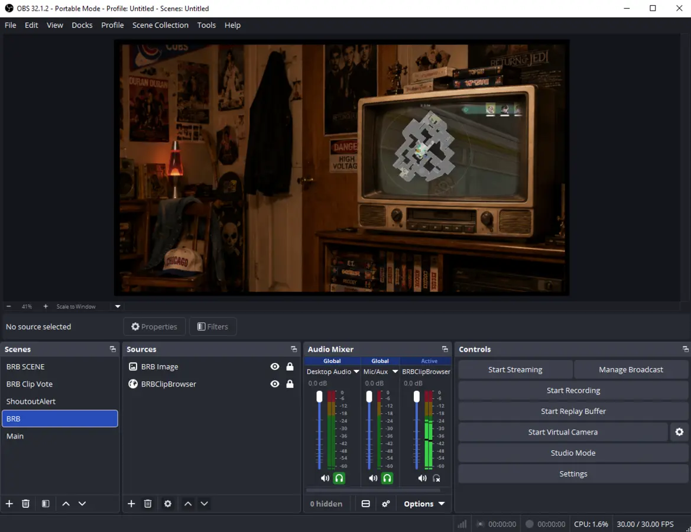
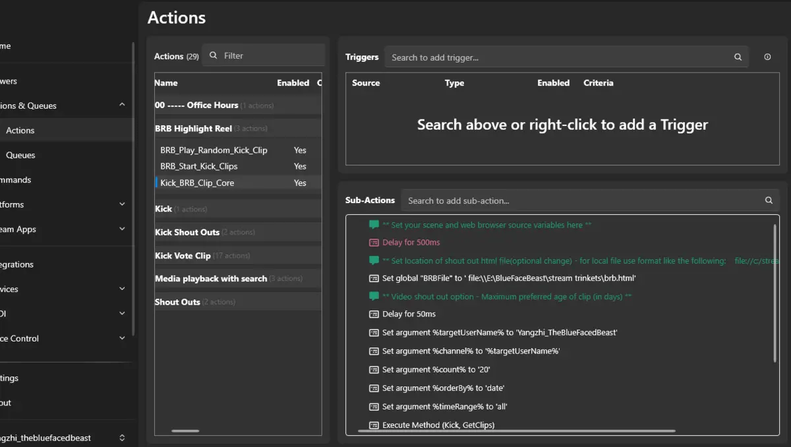

Kick BRB Highlight Reel
1. Purpose
This setup automatically plays random Kick clips while OBS is on the BRB scene. When a clip ends, brb.html asks Streamer.bot for the next Kick clip.
Enter BRB scene
-> BRB_Start_Kick_Clips
-> BRB_Play_Random_Kick_Clip
-> Kick_BRB_Clip_Core
-> brb.html plays clip
-> video.onended calls BRB_Play_Random_Kick_Clip
2. OBS Setup
| Source | Recommended Name | Purpose |
|---|---|---|
| Scene | BRB | Scene that starts and stops the reel. TV_Frame_Border |
| Background | BRB_Image | Main BRB background. |
| Browser Source | BRBClipBrowser | Displays brb.html and plays the Kick clip. |
| Idle Static* | static | Shown when no clip is playing; hidden while clips play. |
*not included

Figure 1. OBS BRB scene with BRBClipBrowser placed inside the TV screen area.
3. Required HTML Player
Use a local player file, for example:
E:\brb.html
Streamer.bot loads it with a video URL:
brb.html?video=https%3A%2F%2Fclips.kick.com%2Ftmp%2Fexample.mp4&thumbnail_url=...&title=...&time=...
4. Action Structure
| Action | Job |
|---|---|
| BRB_Start_Kick_Clips | Simple bridge that calls BRB_Play_Random_Kick_Clip. |
| BRB_Play_Random_Kick_Clip | Checks that OBS is still on BRB, then calls Kick_BRB_Clip_Core. |
| Kick_BRB_Clip_Core | Pulls Kick clips, picks one, resolves MP4, loads brb.html, and shows the browser. |
Only BRB_Reel_Stop should show static.

Figure 2. Streamer.bot Kick_BRB_Clip_Core action with the target channel, GetClips, and clip-loading steps.
5. Why brb.html Handles the Next Clip
Kick.bot clip arguments normally include id, title, preview, video, and link, but not a reliable duration field. The clean method is to let brb.html detect the real video end.
video.onended
-> Streamer.bot WebSocket DoAction
-> BRB_Play_Random_Kick_Clip